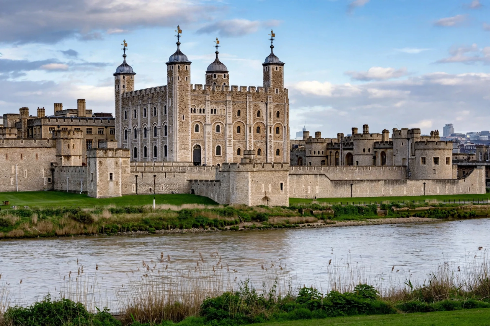

From Wikipedia, the free encyclopedia
| Tower of London | |
| Official name | His Majesty's Royal Palace and Fortress of the Tower of London |
|---|---|
| Location | London Borough of Tower Hamlets, on the River Thames |
| Founded | c. 1066–1078 (White Tower begun 1078) |
| Founder | William the Conqueror |
| Functions (historical) | Fortress, royal palace, prison, treasury, menagerie, mint, observatory |
| Heritage | UNESCO World Heritage Site (1988) |
The Tower of London, officially His Majesty's Royal Palace and Fortress of the Tower of London, is a historic castle on the north bank of the River Thames in central London. Founded towards the end of 1066 as part of the Norman Conquest, its White Tower — built by William the Conqueror in 1078 — became the symbol of Norman power in England. The castle has served as a royal residence, armoury, treasury, menagerie, the home of the Royal Mint, and the repository of the Crown Jewels.

Richard I, Henry III, and Edward I expanded the defences with concentric curtain walls and a moat in the 12th and 13th centuries, giving the Tower its present form. Although its reputation as a place of torture and death is largely a product of Tudor propaganda and later storytelling, the Tower did witness notable executions: Anne Boleyn and Catherine Howard, wives of Henry VIII, were beheaded on Tower Green, and the "Princes in the Tower" disappeared in 1483. The last execution there was that of the German spy Josef Jakobs in 1941.
The Tower is cared for by Historic Royal Palaces and guarded by the Yeoman Warders ("Beefeaters"), who also conduct tours. It houses the Crown Jewels and the Royal Armouries' collection, and is home to a community of ravens, whose presence legend links to the survival of the kingdom. It is one of London's most popular tourist attractions.
See also: Durham Cathedral · Norman Conquest · Crown Jewels · Yeoman Warders